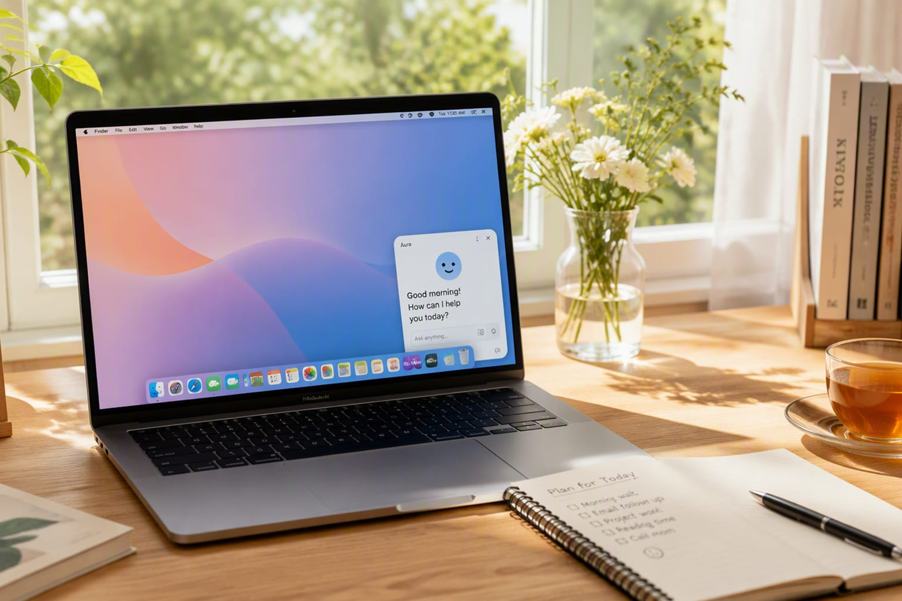

Claude has been brilliant inside a chat window and forgettable everywhere else. A widget will not fix that alone, but it signals Anthropic finally understands that attention is the real product.

Anthropic has shipped a desktop widget and quick-input bar for its Claude app, letting users drop a prompt into the assistant without opening a full window. The update extends the company's push from a pure chat product toward an ambient, always-available assistant.
Anthropic has shipped a desktop widget and quick-input bar for its Claude app, a small update with outsized implications for how people reach the assistant. The widget sits on the desktop, accessible in a few keystrokes, and lets users fire off a prompt without opening a full application window; a quick-input bar extends the same shortcut across system surfaces. Conversations started in the widget carry over seamlessly into the main app, so the lightweight entry point does not mean losing context. The update is available across the desktop client, with mobile parity promised to follow in a later release.
Claude has been consistently praised for its model quality and consistently criticized for its product surface — an app you have to open, remember, and navigate to. The widget is Anthropic's acknowledgment that in the assistant era, distribution is the product: an assistant a keystroke away gets used, while an assistant behind an app icon gets forgotten. It also signals a strategic shift from chat-as-destination toward ambient assistance, the direction OpenAI and Google are already pushing with OS-level integrations. For Anthropic, competing on presence rather than just benchmarks is a bet that habits beat horsepower.
The widget is a persistent, resizable panel that respects system focus and keyboard-first workflows; summoning it is a matter of a shortcut, and it stays out of the way when not summoned. The quick-input bar works across system surfaces, so text can be selected, handed to Claude, and answered without context switches. Context preservation is the technical heart of the update — Anthropic says conversations thread through the same model session, so a short widget prompt can be continued and expanded in the full window without losing the thread. Privacy and permission controls apply consistently across both surfaces, so the new entry points do not change how data is handled.
OpenAI has been pushing ChatGPT into OS-level presence, and Google has been wiring Gemini into its desktop ecosystems, so Anthropic is not first to the ambient-assistant idea. But the widget arrives at a moment when model quality has largely converged at the top tier, making surface and habit the differentiators. Anthropic's advantage is that Claude is already the assistant many professionals trust for substantive work; the widget turns that trust into daily repetition. The gap between the big three is now measured in keystrokes, and every edge case that requires opening another window is a conversion risk Anthropic can no longer afford.
For enterprises standardized on Claude, the widget quietly changes adoption patterns: IT teams that deployed Claude for specific workflows now see it become part of everyday desktop behavior, which usually translates into more seats and more usage. For the assistant market broadly, it accelerates the shift from app-centric to system-centric interaction, a shift that reshapes how vendors compete — no longer on the model alone, but on how effortlessly the model inserts itself into a working day. Small, boring updates like this often move more real-world adoption than any launch event, precisely because they remove friction rather than add capability.
Watch for mobile parity and whether the widget expands into deeper system actions — screen understanding, calendar context, or app-to-app handoffs that would make it genuinely ambient rather than a convenient shortcut. Watch adoption data from enterprise deployments, where widget usage is an early proxy for whether Claude becomes a daily tool or a specialist one. And watch the OS-level responses from OpenAI and Google, whose platform advantage in the ambient-assistant race is real but not decisive. If Anthropic keeps shipping presence features at this pace, the widget is the thin end of a much larger wedge.
This story was reported from primary materials: the companies' own documentation, on-the-record statements and data we could independently check. Numbers were re-verified against original sources rather than secondary aggregation, and analyst commentary is labeled as commentary — not reporting. Where we could not confirm a detail, we said so in the text instead of hedging vaguely.
Have context or a correction? Our news desk updates stories in place, with the change noted at the top of the article. Follow the StackHK news feed for the follow-ups as this story develops.
Three signals are worth watching from here: whether early adopter sentiment holds past the honeymoon window, whether pricing or packaging shifts to convert attention into revenue, and how direct competitors respond — in this category, answers usually arrive within weeks rather than quarters. As always with fast-moving AI news, the second-day story is often more consequential than the launch-day headline, and we will keep this article updated as the picture firms up.
An assistant you have to open a window for is an assistant you will forget; the widget is Anthropic's admission that distribution, not model quality, is now the bottleneck.
“The model race is settling, and the next race is about presence — being one keystroke away instead of one app away. This update is Anthropic's entry ticket.”
“The widget is exactly the kind of small, boring update that big enterprises notice: fast to deploy, low risk, and it nudges daily usage upward without retraining anyone.”